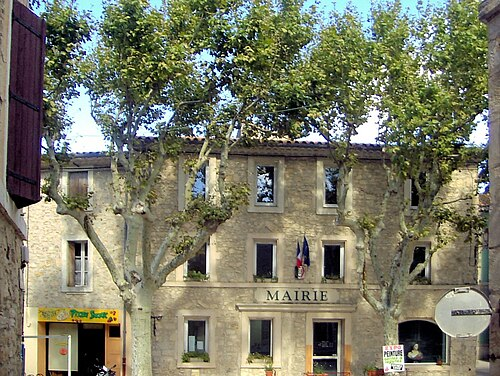

Peyriac-de-MerVillage d’étang, de sel et de garrigue

⟹ Villes & Villages Emblématiques ⟸
Un territoire façonné par l’eau et le sel. Peyriac-de-Mer occupe un site lagunaire exceptionnel entre l’étang de Bages-Sigean, les collines calcaires des Corbières maritimes et la garrigue. Ici, la frontière entre terre et eau a constamment changé au gré des dépôts, des vents, des aménagements humains et de l’exploitation des lagunes. Cette géographie explique toute l’histoire du village : pêche, sel, circulation, élevage et viticulture y ont longtemps été complémentaires.
Antiquité et proximité de Narbo Martius. Le territoire se trouve dans l’arrière-pays immédiat de Narbonne, l’antique Narbo Martius, première colonie romaine fondée en Gaule et capitale de la Narbonnaise. Les étangs littoraux constituent alors des espaces de pêche, de navigation locale et d’échanges. Le sel, indispensable à la conservation des aliments et à de nombreuses activités artisanales, représente une ressource stratégique dont l’exploitation a profondément marqué le littoral narbonnais.

Du monde antique au village médiéval. Après l’Antiquité, l’habitat se regroupe progressivement sur une petite hauteur dominant la lagune. Cette implantation compacte protège des zones humides et offre un point de contrôle sur les chemins terrestres et les accès à l’étang. Peyriac appartient à l’aire d’influence de Narbonne, dont les autorités seigneuriales et ecclésiastiques exercent pendant des siècles un poids considérable sur les villages environnants.
Un bourg méditerranéen. Le cœur ancien conserve des rues étroites, des passages et des maisons serrées caractéristiques des bourgs du littoral languedocien. L’église Saint-Paul constitue l’un des principaux repères du village. Autour du noyau bâti s’étendent jardins, terres sèches, vignes, pâturages et zones humides, formant une économie diversifiée adaptée à un milieu contraignant.
Les salines, cœur de l’identité locale. Pendant des siècles, l’exploitation du sel structure le paysage et le travail. Digues, canaux, bassins d’évaporation et circulations d’eau transforment la bordure de l’étang. La production exige une connaissance précise des vents, de l’ensoleillement et des niveaux d’eau. Les salins constituent donc à la fois un espace industriel, un paysage culturel et un milieu naturel artificiellement entretenu.
Pêche, élevage et ressources de la lagune. L’étang fournit poissons, coquillages et autres ressources, tandis que les terres plus sèches accueillent troupeaux et cultures méditerranéennes. Cette complémentarité est caractéristique des sociétés lagunaires : les habitants ne dépendent pas d’une seule activité mais exploitent différents milieux selon les saisons et les possibilités du marché.
XVIIIe-XIXe siècles : l’essor de la vigne. À l’époque moderne puis surtout au XIXe siècle, la viticulture prend une importance croissante. La proximité de Narbonne, les progrès des transports et la forte demande en vin favorisent l’extension des vignobles. Maisons vigneronnes, caves et bâtiments agricoles témoignent encore de cette période de prospérité. Le phylloxéra, à la fin du XIXe siècle, impose ensuite une reconstitution du vignoble sur de nouveaux porte-greffes.
Les crises viticoles du XXe siècle. Comme l’ensemble du Midi, Peyriac subit les crises de surproduction et de mévente. La vigne demeure néanmoins une composante essentielle du paysage des Corbières maritimes. L’économie locale évolue progressivement avec la mécanisation, la diminution du nombre d’exploitants et le développement des activités de services et de tourisme.
La fin de l’exploitation industrielle du sel. Au XXe siècle, l’activité salinière cesse. Les anciens bassins, digues et canaux perdent leur fonction productive mais ne disparaissent pas : ils deviennent progressivement un patrimoine paysager et écologique. Les milieux salés accueillent une flore spécialisée, des invertébrés et de nombreux oiseaux d’eau, faisant de l’ancien espace industriel un site naturel de premier plan.
Des salines au patrimoine naturel. La reconversion des anciens salins illustre une évolution remarquable : un paysage créé par des générations de travailleurs du sel est aujourd’hui lu à la fois comme patrimoine historique et comme espace de biodiversité. Les passerelles qui traversent les anciens bassins permettent au visiteur de comprendre physiquement cette relation entre village, étang et salines.
Une identité méditerranéenne intacte. Peyriac-de-Mer conserve aujourd’hui son église Saint-Paul, son lacis de rues anciennes, ses maisons de pierre, ses paysages viticoles et surtout la mémoire du sel. Son histoire peut se résumer autour de trois éléments indissociables — l’étang, le sel et la vigne — auxquels s’ajoutent désormais la protection des milieux naturels et la découverte patrimoniale.